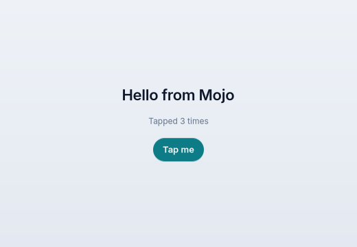
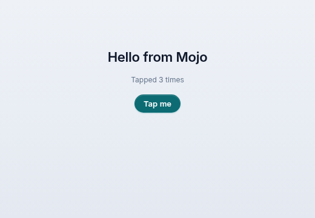
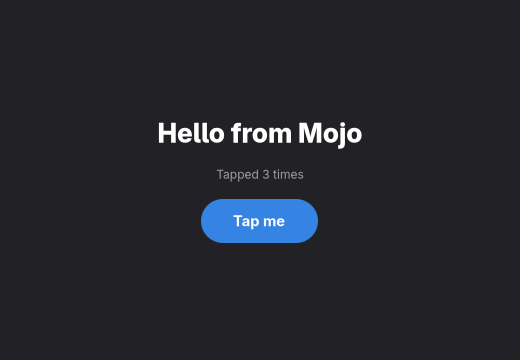

Your first Mojo app.
omxcode is an app framework written in Mojo. You write one file; it becomes a native app on Linux and a web app, with Mac apps on the way. Install, write 30 lines, build, run. About ten minutes.
One file. Native everywhere. Mojo all the way down.
Mojo is a new language that reads like Python and compiles like C, down to the GPU. omxcode uses it to write apps: you describe the screen, and each platform draws it with its own controls.
You describe, the platform draws
An app is a struct with three parts: its state, an update that changes it, and a view that describes the screen. omxcode turns that description into GTK widgets on Linux, HTML on the web and AppKit views on the Mac.
Linux and the web today
Linux and the web are run by checks on every change. The Mac builds, and this page's app has run on GitHub's macOS machine, with its layout there still to fix. Android runs on the emulator; iPhone builds. Windows waits for Mojo itself.
A look, a GPU, an agent
The Liquid look is one method. The same language computes on an NVIDIA GPU when there is one. And every app can be used by an AI agent without a line of extra code.
Install. One tool, one command.
You need:
- Linux on x86-64 with GTK 4 and libadwaita 1.7 or newer, from your distribution (recent ones such as Fedora 42 or Ubuntu 25.04 ship it; most testing is on Arch).
- pixi, which installs Mojo and everything else into the project folder. Nothing goes system-wide.
- Optional: an NVIDIA GPU. Without one, the same code runs on the CPU.
On a Mac (Apple Silicon), pixi installs the same tools; so far that has been run on GitHub's macOS machines, not yet on someone's own Mac.
curl -fsSL https://pixi.sh/install.sh | sh # if you don't have pixi git clone https://github.com/abhisheksreesaila/omxcode cd omxcode pixi install # Mojo 1.2 and the rest, in .pixi/
The first pixi install downloads a few GB. If it stops at failed to link 'share/X11/xkb', two packages raced for one path: delete the half-made .pixi folder and run it again.
Write the app. State, update, view.
Make a folder for it, examples/start/, with one file, app.mojo. This one is already in the repository.
The state is the struct's fields: here, how many times the button was tapped.
update runs when something happens. The button sends the message TAP; update adds one.
view describes the screen from the state: a title, a line of text and a button, in a column. After every update, omxcode works out what changed and updates only that.
theme picks the look. Leave it out and you get each platform's own.
from mojoui import App, Event, View, VStack, Text, Button, TITLE, CAPTION, PROMINENT from mojoui.theme import Theme from themes.liquid import liquid comptime TAP = 1 struct Main(App): var taps: Int def __init__(out self): self.taps = 0 def title(self) -> String: return "Hello" def theme(self) -> Theme: return liquid() def update(mut self, event: Event): if event.message == TAP: self.taps += 1 def view(self) -> View: return VStack( Text("Hello from Mojo", style=TITLE), Text("Tapped " + String(self.taps) + " times", style=CAPTION), Button("Tap me", on_tap=TAP, style=PROMINENT), spacing=16, )
Build it. Run it. Native window, then the browser.
Linux: scripts/build.sh start linux compiles the file into a GTK app at build/start/linux/start. Run it and tap the button.
The web: scripts/build.sh start web builds the same file for the web host. Open http://127.0.0.1:5001. The app's logic stays in the server, in Mojo; the page gets HTML.
Mac: scripts/build.sh start mac makes an AppKit app for Apple Silicon (it cross-builds from Linux too). This app ran on GitHub's macOS 15 machine and its taps work, but the layout isn't right yet: the content doesn't fill the window. That's next.
The first build takes about a minute; later ones are quicker. For now the compiler also prints deprecation warnings from the framework's own code; they're harmless, and cleaning them up is on the list.
scripts/build.sh start linux build/start/linux/start # a native window scripts/build.sh start web pixi run python mojoui/hosts/web.py build/start/web # → http://127.0.0.1:5001


Liquid comes free. One method.
Without a theme, the app uses each platform's own look: Adwaita on Linux, here in dark mode.
Add the three-line theme method returning liquid() and the same app wears Liquid: soft surfaces, springy motion, the same on Linux and the web. Nothing else in the app changes.
Other looks ship too (Fluent, Omarchy, Paper), and a theme is plain Mojo you can copy and change: themes/.

Hand it to an agent. No extra code.
Every omxcode app can also run as a set of tools for an AI agent, over MCP. The agent reads the screen as text and presses the same buttons a person would. It can't do anything a person couldn't: a disabled button is no tool.
scripts/agent.sh start prints the one command that gives the app to Claude Code, or any MCP client.
The agent calls screen and sees the title, the count and a tool named tap-me, made from the button. Calling tap-me taps it.
Going the other way, an agent can answer with screens built from omxcode's components: agents build screens.
scripts/agent.sh start # prints: claude mcp add start -- pixi run python \ # …/mojoui/hosts/agent.py …/build/start/web screen Hello · design: Liquid · 1 tools on this screen "Hello from Mojo" "Tapped 0 times" Button "Tap me" → tap-me tap-me Did tap-me. Now: Tapped 1 times
Real output from pixi run python scripts/agent_client.py build/start/web, the small MCP client the checks use.
Where to go from here.
Learn it in slides
From this app to what's new: agents as a host, native AI screens, the GPU in the same file.
Tutorial 2: a todo app
A list from your data, messages that carry an id, and tasks kept in SQLite.
Add your own model
A PyTorch network as a function your scripts call, on the GPU, in the app's own process.
Components
124 of them, from buttons to data grids, charts and maps, with what runs where.
Examples
Every app in examples/ is one folder you can copy: a todo list, notes, a drawing app, a GPU canvas.
Agents build screens
An AG-UI agent answers with maps, charts and forms, drawn natively.
omxplorer
The showcase: a data app built entirely with omxcode, with the GPU underneath.
How it works
One card followed from a line of Mojo to three native toolkits.
For your agent
llms.txt: these docs in a form a coding agent can read.